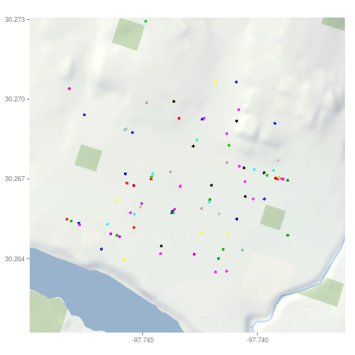
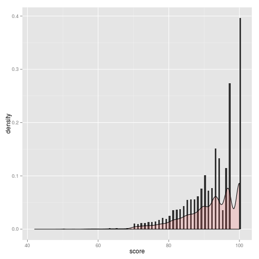

A submitted project for Coursera Developing Data Products
https://jamesjurach.shinyapps.io/AustinRestaurantInspections is a most amazing application. It has these features:
A map of Austin
A dot for each restaurant colored by score
Interactive criteria selection and zoom.
df0 <- read.csv('austin_restaurant_inspections.csv')
df <- df0[df0$score<80 & df0$lon> -97.748891 &
df0$lon< -97.738420 & df0$lat > 30.263400 & df0$lat < 30.274056,]
map <- readRDS("map-16.rds")
ggmap(map) + geom_point(aes(lon, lat, tooltip=name), data=df, alpha=0.8,
color=df$score, point_size=5) + labs(x=NULL, y=NULL)

ggplot(df0, aes(x=score)) +
geom_histogram(aes(y=..density..), binwidth=0.5) +
geom_density(alpha=.2, fill="#FF6666")

I hope you enjoy my Shiny Application and your remaining evaluations.